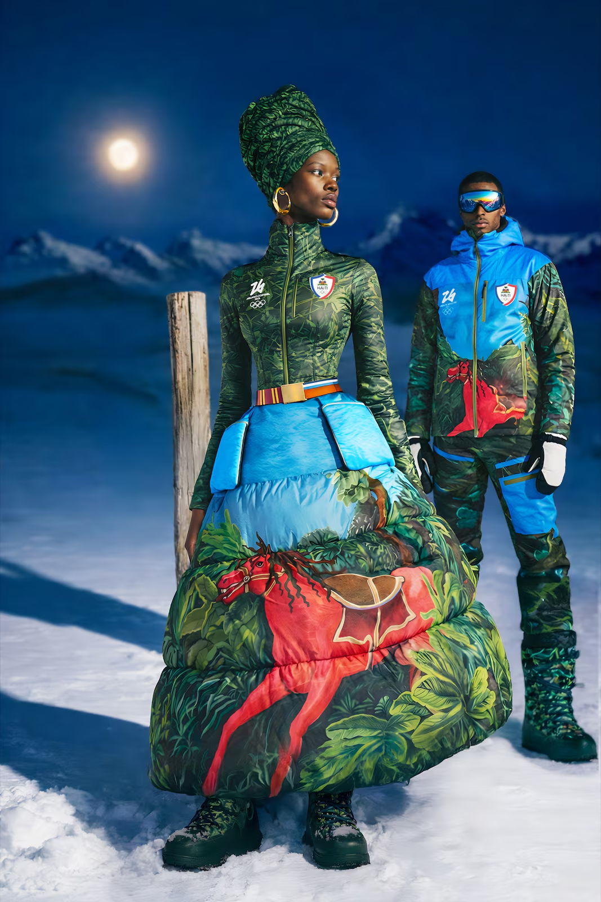
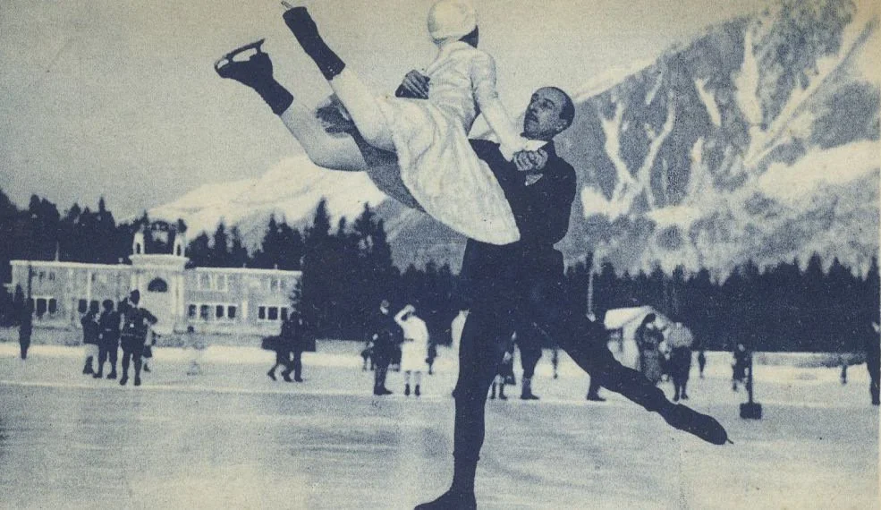
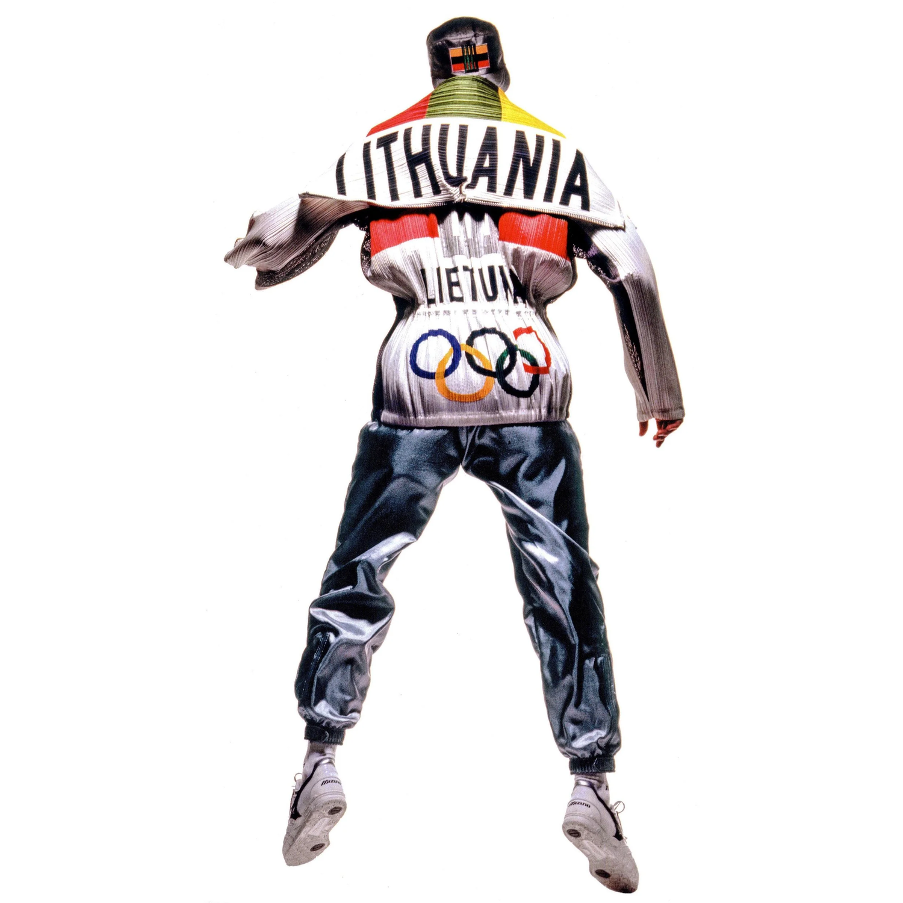
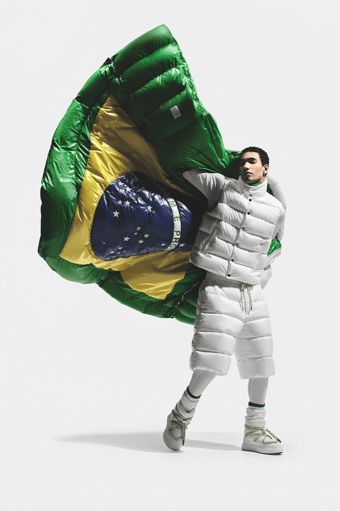
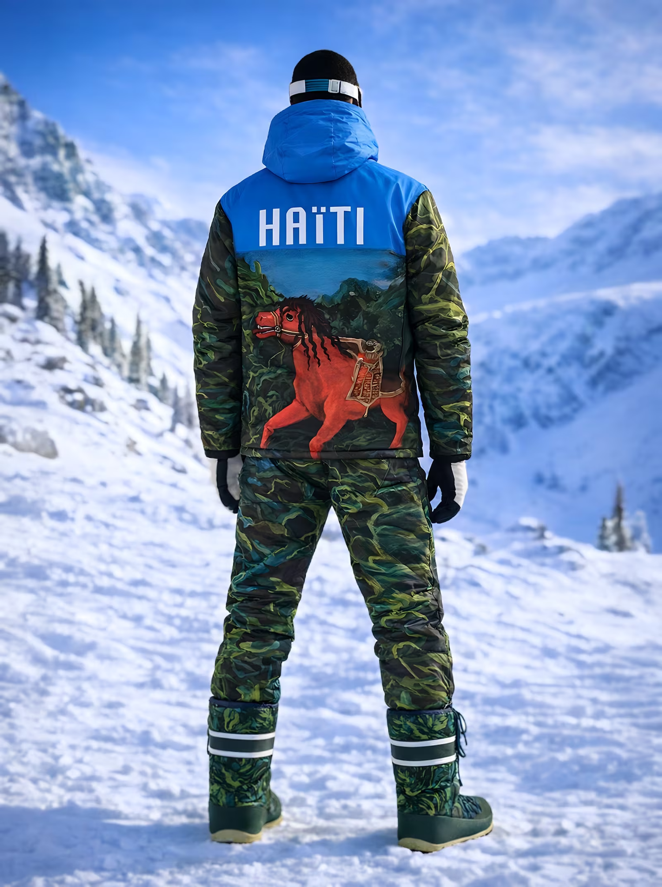
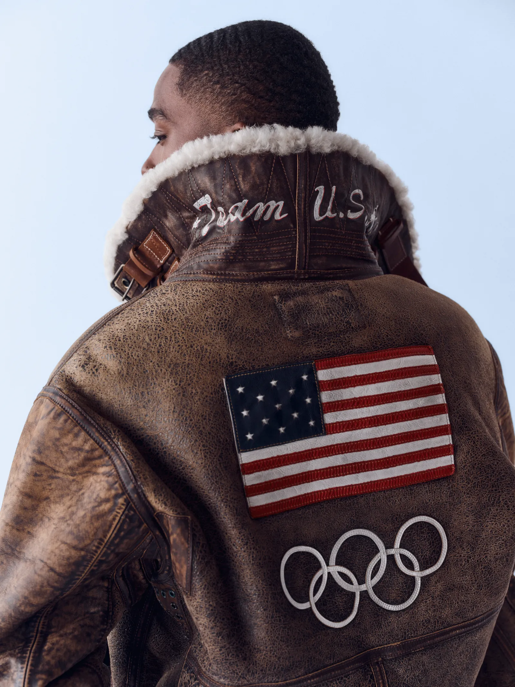

Tuesday, Feb 24, 2026
The Winter Olympics have always been a contest of endurance. But now, they are also a contest of image. Before the first race begins, before medals are tallied, nations step into a stadium and announce themselves through fabric. The parade of nations is projection, while each uniform is a carefully constructed statement about identity, power, and belonging. At the Winter Games, where climate demands technical precision, uniforms operate on two levels. They must perform against wind, snow, and subzero temperatures. But they must also perform for cameras, sponsors, and global audiences. What began as protection from the cold has evolved into a negotiation between heritage and branding. Today, Olympic uniforms are engineered not only for movement, but for meaning.

Team Haiti, 2026 Olympics. Photo via Stella Jean.
At the first Winter Olympics in 1924, athletes arrived in what they trained in: military coats, knit sweaters, functional boots. There was no global fashion conversation, no coordinated aesthetic beyond national colors.
By the late twentieth century, televised ceremonies transformed the parade of nations into spectacle. Uniforms became coordinated statements of modernity and pride. Synthetic performance fabrics entered competition wear, while ceremony looks leaned into tailoring and symbolism. The Games became both athletic contests and global branding exercises. Function remained essential, but image began to rival it.

Chamonix, first Winter Olympics 1924. Photo via Fonds Gay-Couttet.
Luxury brands now approach Olympic uniforms the way they approach capsule collections: heritage references, national storytelling, controlled exclusivity. The athlete becomes the model, the nation becomes the narrative.
Stepping into their fortes, luxury performance brands have taken over the uniform scene. Labels like Rossignol and Bogner have long operated at the intersection of alpine sport and European luxury, engineering technical ski suits that move seamlessly from slope to après. Their presence at the Winter Games feels expected.
But something different happens when brands design uniforms that do more than perform. When a house like Moncler constructs a kit, it is not just insulating the body. It is insulating an image. When Ralph Lauren outfits Team USA, it is not simply tailoring coats; it is tailoring mythology. Performance is assumed, and what is being engineered now is perception.
Long before luxury houses treated the Olympics like capsule drops, Miyake approached uniform design as philosophy. His work has always lived at the intersection of technology and tradition, structure and movement. The 1992 uniforms embodied that tension. Clean silhouettes. Architectural drape. Fabric engineered not just to insulate, but to move.
Miyake understood something that feels even more relevant now: a uniform is not a costume, it is an extension of the body in motion. His pleating techniques allowed garments to respond to movement rather than restrict it. Performance was embedded in construction, not added as branding.
In many ways, Miyake’s Olympic work predicted the current era, where performance technology and fashion credibility must coexist. Today’s uniforms often announce the brand first and the nation second. Miyake’s designs centered harmony between athlete and garment, and between heritage and future.

Issey Miyake 1992 Olympic Uniforms.
Team Brazil’s 2026 Winter Olympics uniforms, designed by Moncler, signal the brand’s technical dominance in outerwear. Known for alpine heritage and glossy puffer silhouettes, Moncler translates Brazil’s tropical identity into a winter register; bold color blocking layered over high-performance insulation.
It is a reminder that even nations without winter sport legacies participate in the visual politics of cold-weather luxury.

Team Brazil, 2026 Olympics. Photo via Moncler.
For Team Haiti, designer Stella Jean brings diaspora storytelling to the forefront. Jean’s work has long centered cross-cultural craftsmanship, blending Italian tailoring with Caribbean references.
Haiti’s uniform does not dilute heritage for minimalism; it amplifies it. Pattern, color, and construction function as reclamation, insisting that representation on a global stage must feel authored, not assigned. The print references Toussaint Louverture, a central figure of the Haitian Revolution and a symbol of Black sovereignty and resistance. His presence within the fabric reframes the uniform as more than ceremonial wear. It becomes historical acknowledgment stitched into motion.
On a stage where smaller nations are often visually overshadowed, the design asserts clarity. Haiti does not arrive quietly. It arrives with memory intact.

Team Haiti, 2026 Olympics. Photo via Stella Jean.
Mongolia continues to quietly win the “best dressed” conversation by leaning into what it already owns: centuries of nomadic craftsmanship and the world’s finest cashmere.
Designed by Goyol Cashmere, the GOYAL collection features intricate hand-stitched Ulzii patterns and silhouettes referencing the Deel, Mongolia’s national dress. Crafted from ultra-fine, sustainable cashmere and wool, the garments rely on natural thermoregulation rather than synthetic performance fabrics.
It is cultural storytelling without apology, high performance through heritage, and luxury through lineage.
Team Mongolia, 2026 Olympics. Photo via Goyol Cashmere.
No Olympic fashion conversation is complete without Ralph Lauren and Team USA. For decades, Ralph Lauren has defined America’s Olympic image through tailored coats, cable knits, and controlled patriotism.
The brand’s vision of America is consistent: collegiate, polished, and aspirational. Even when incorporating modern heating technology or performance materials, the aesthetic remains rooted in East Coast classicism. The uniform becomes an export of American identity as much as a garment.

Team USA, 2026 Olympics. Photo via Ralph Lauren.
Olympic partnerships are not accidental, they are long-term branding investments. When luxury houses design for national teams, they align themselves with discipline, excellence, and global unity.
But the exchange works both ways. Smaller nations leverage fashion to command visual attention. The Winter Olympics, in particular, rewards tension. Cold climates demand layering, texture, and silhouette, there is room for narrative in every coat.
Uniforms are often framed as neutral; they are anything but that. They communicate who gets to define national identity. They reveal which industries have the resources to participate. They show how culture and commerce intertwine on the most watched stage in sport.
To walk forward is to look beyond aesthetic rankings and ask sharper questions. Who is designing? Who is profiting? Who is being represented, and who is being simplified?
The Olympic uniform is not just what a country wears. It is how a country wishes to be seen.